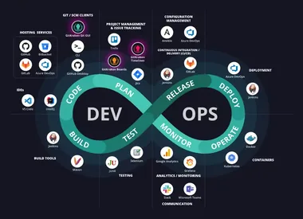

·
·
Olá, eu sou Josenilto Luis da Silva, Engenheiro SRE/DevOps
Josenilto Luis da Silva
Sou
um
Projetando e automatizando infraestrutura há mais de 13 anos — entregando confiabilidade e escalabilidade em Azure, AWS e GCP, do bare-metal ao Kubernetes.
Arquiteto de Soluções Cloud & Engenheiro DevOps
Especialista em infraestrutura, plataformas cloud-native e arquitetura de soluções — de data centers on-premises a ambientes multi-cloud.
SO & Plataformas
Provedores Cloud
Arquitetura
Certificações

13+
anos de
experiência
experiência
Experiência Profissional
Mais de 13 anos em farmacêutico, energia, varejo, fintech, governo e educação — construindo e operando a infraestrutura por trás deles.
Farmacêutico / Logística
DevOps Specialist / Architect
Grupo Profarma
Energia / O&G
SRE / DevOps Engineer
TIVIT · Cliente: Petrobras
Varejo / Aviação
DevOps Engineer
TelTec Solutions · Clientes: Grupo Madero, BRMALLS, Azul, Gol Linhas Aéreas
Fintech / Segurança
DevSecOps Engineer
Monitora · Cliente: Serasa Experian
Food Service
Cloud / DevOps Architect
Grupo Madero
E-commerce
Cloud Analyst
Linx · Projetos Chaordic
Consultoria de TI
Infrastructure Analyst
Stefanini LATAM
Governo / Petróleo
Infrastructure Analyst
CTCTech · Cliente: ANP (Projeto APPs)
Financeiro
SysAdmin · On-Premises & Cloud
G&P / GlobalHitss · Cliente: Caixa Econômica Federal
Varejo
Deployment Analyst
Ferragens Ramada
Educação / Varejo
Deployment Analyst
Cam Tecnologia · Clientes: RNP, Ferragens Ramada
Educação
IT Operations Supervisor
Universidade Veiga de Almeida — UVA
Educação
Network Analyst
Universidade Veiga de Almeida — UVA
Educação
IT Intern
Universidade Veiga de Almeida — UVA
Formação
-
Em andamentoMestrado · Sistemas de Informação Instituto Militar de Engenharia — IME
-
Dez/2025Pós-Graduação · Arquitetura e Projetos de Cloud Computing Universidade Estácio de Sá — UNESA
-
Mar/2024Bacharelado · Sistemas de Informação Universidade Estácio de Sá — UNESA
-
Ago/2019Bacharelado · Ciência da Computação Universidade Veiga de Almeida — UVA
Diferenciais
Por que trabalhar comigo?
Um jeito de trabalhar construído sobre três pilares — como conduzo projetos, colaboro com equipes e me comunico além-fronteiras.
Metodologias Ágeis
Uso metodologias ágeis para desenvolver meus projetos em harmonia, economizar recursos e ganhar agilidade e eficiência.
Soft Skills
Estou sempre desenvolvendo minhas habilidades e competências relacionadas ao comportamento humano para tornar o ambiente de trabalho um lugar agradável.
Idiomas
Desenvolvendo ativamente fluência e proficiência em inglês através de um curso em andamento. Língua nativa: Português.
Como Podemos Trabalhar Juntos
Virtual
Consultoria SRE/DevOps remota e suporte de infraestrutura — em qualquer lugar do mundo, totalmente assíncrono ou síncrono.
Saiba Mais
Mais Popular
Híbrido
Uma combinação de colaboração remota e presencial — ideal para projetos que exigem flexibilidade e presença prática.
Saiba MaisPresencial
Sessões de arquitetura presenciais, workshops e planejamento estratégico — colaboração direta no seu local.
Saiba Mais
Open Source
Repositórios de Laboratório por Categoria
Guias práticos de instalação e configurações que mantenho no GitHub — clique numa tecnologia pra abrir o repositório.